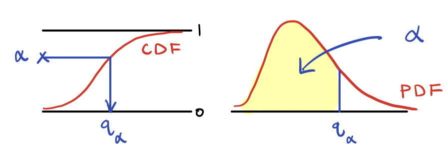

Lab 4
Due Thursday February 27 at 11:59 PM
Part 0: working with familiar distributions in R
Here are the famous, “named” families of probability distributions we have seen so far:
| distribution | range | pmf/pdf | mean | variance |
|---|---|---|---|---|
| \(X\sim\text{Bern}(p)\) | \(\{0,\,1\}\) | \(p^x(1-p)^{1-x}\) | \(p\) | \(p(1-p)\) |
| \(X\sim\text{Binom}(n,\,p)\) | \(\{0,\,1,\,2,\,...,\,n\}\) | \(\binom{n}{x}p^x(1-p)^{n-x}\) | \(np\) | \(np(1-p)\) |
| \(X\sim\text{Geom}(p)\) | \(\{1,\,2,\,3,\,...\}\) | \((1-p)^{x-1}x\) | \(1/p\) | \(\frac{1-p}{p^2}\) |
| \(X\sim\text{Pois}(\lambda)\) | \(\mathbb{N}\) | \(e^{-\lambda}\frac{\lambda^x}{x!}\) | \(\lambda\) | \(\lambda\) |
| \(X\sim\text{N}(\mu,\,\sigma^2)\) | \(\mathbb{R}\) | \(\frac{1}{\sqrt{2\pi\sigma^2}}\exp\left(-\frac{(x-\mu)^2}{2\sigma^2}\right)\) | \(\mu\) | \(\sigma^2\) |
| \(X\sim\text{Gamma}(\alpha,\,\beta)\) | \((0,\,\infty)\) | \(\frac{\beta^\alpha}{\Gamma(\alpha)}x^{\alpha-1}e^{-\beta x}\) | \(\alpha/\beta\) | \(\alpha/\beta^2\) |
For each distribution family, R provides four basic functions for working with it.
p- functions: evaluating the cdf
The cumulative distribution function (cdf) of a random variable \(X\) is the function \(F:\mathbb{R}\to[0,\,1]\) that returns \(F(x)=P(X\leq x)\) for any \(x\in\mathbb{R}\). Every distribution family has a p- function that evaluates the cdf:
So if I call
pnorm(-2.4, 4, 3)[1] 0.0164487it returns \(P(X\leq -2.4)\) for \(X\sim\text{N}(4, 9)\). If I want \(P(-2.4 < X < 0.5)\), then I know that \(P(a<X<b)=F_X(b)-F_X(a)\), so I can call
Recall that for a continuous random variable, it doesn’t matter if I include the endpoints or not when calculating the probability of an interval, since \(P(X=c)=0\) for any \(c\in\mathbb{R}\). But this is not the case for a discrete random variable, so you have to be careful. If \(Y\sim\text{Pois}(4)\), and I want \(P(2 < Y < 5)\), it would not be correct to compute \(F_Y(5) - F_Y(2)\), because that will include \(P(Y=5)>0\). The event \(2 < Y < 5\) is equivalent to \(2 < Y \leq 4\), and now I can compute:
You will get burned by this at least once. I guarantee it. But please take note. When I wanted \(P(X\leq -2.4)\) for \(X\sim\text{N}(4, 9)\), I called pnorm(-2.4, 4, 3), because \(\text{sd}(X)=\sqrt{\text{var}(X)}=3\).
r- functions: generating random numbers
These commands generate n random numbers that behave according to the distribution you specify:
For example:
rnorm(5, mean = 4, sd = 3)[1] 2.1613071 6.6467256 -0.6438999 3.6999242 2.4109673
d- functions: evaluating the pmf/pdf
For both discrete and (absolutely) continuous distributions, R uses the same syntax for evaluating the pmf/pdf:
This is understandable but slightly unfortunate, because we know that the pmf is a function that returns probabilities when evaluated. The pdf is not. But anyway, if you want \(P(X=5)\) for \(X\sim\text{Binom}(10, 0.3)\), here you go:
dbinom(5, 10, 0.3)[1] 0.1029193Do you understand what this command did?
dbinom(0, 1, 0.7)[1] 0.3
q- functions: evaluating the quantile function
We will not work with this today, but for completeness, the quantile function of a random variable is the (generalized) inverse of its cdf. So \(F^{-1}\). It is the function that, given a probability \(\alpha\in(0,\,1)\), returns the cut-off point on the number line that has that much probability to the left. So the \(\alpha\)th quantile \(q_{\alpha}\) satisfies \(P(X\leq q_\alpha) = \alpha\). Here is the picture:

The median is the \(\alpha=0.5\) quantile. The quantiles of the standard normal distribution are famous:
Every distribution family has a q- function that, given \(p\in(0,\,1)\), returns \(q_p\):
This is easier to understand for a random variable whose cdf is smooth and one-to-one. For discrete random variables, the behavior of the q- function is a bit subtle, and we’ll get into it later.
Part 1: now you try
Task 1
Use only the appropriate p- function to compute \(P(X > 7)\) for \(X\sim\text{Geom}(0.5)\).
Task 2
Use only the appropriate p- function to compute \(P(3 \leq X < 6)\) for \(X\sim\text{Geom}(0.5)\).
Task 3
Now use only the appropriate d- function to compute \(P(3 \leq X < 6)\) for \(X\sim\text{Geom}(0.5)\). Verify that you get the same number that you got in Task 2.
Task 4
Simulate n = 1000 random numbers from the Geom(0.5) distribution and store them in a new variable called x. What proportion of the numbers in x fall into the interval \([3,\, 6)\)? Is this number in the ballpark of what you got in Tasks 3 and 4?
Task 5
Simulate n = 5000 random numbers from the \(\text{N}(\pi,\,4)\) distribution and store them in a new variable called y. Use the hist function with freq = FALSE and breaks = "Scott" to plot a histogram of these numbers.
Task 6
Add on top of your histogram a line plot of the probability density function of the \(\text{N}(\pi,\,4)\) distribution. Do the line plot and the histogram broadly agree?
Task 7
Compute the average of the numbers that you simulated in Task 5. What is it close to?
Part 2: modeling insurance claims
An insurance company sells policies in the hope that most customers will not actually file a claim. In that case, the company keeps the premiums, and never actually pays out. Cha-ching. If on the other hand, every customer files a claim, then the company is ruined. They simply don’t keep enough cash on hand to literally pay out all the customers they sell policies to.
This is obviously a risky business. The insurance company is making a bet that most of their customers won’t need the policy that they bought, but there could be surprises. The company is fundamentally uncertain about how many people will file claims, and how big those claims will be. Faced with this uncertainty, they must make decisions about who to sell to, what to charge, and how much cash to keep on hand. To manage the uncertainty and make good decisions, insurance companies hire armies of actuaries to model the insurance market using the basic tools of probability and statistics that we are learning. Let’s get a taste of that.
Imagine the Pacific All-Risk Insurance Company makes its decisions on a monthly basis. Let \(N\in\mathbb{N}\) denote the number of insurance claims the company receives in a given month. Each of those claims will be for some positive dollar amount, call it \(X_i>0\). So each month, customers apply for \(S=X_1+X_2+...+X_N\) in reimbursement from the insurance company. The company is not sure what \(N\) will be, they are not sure how big each \(X_i\) will be, and so they are not sure how big the total \(S\) will be. But if it gets too big, the company is finished. We shall model the number of claims \(N\) and the size of each claim \(X_i\) as random variables using our familiar families.
The number of claims
The random variable \(N\) is discrete. It’s counting the number of claims received in a month.
Task 8
Say that \(N\) follows a Poisson distribution. The actuaries at Pacific All-Risk know that historically, the company typically receives about 100 claims per month. To capture this, how should we set the parameter(s) of the Poisson distribution?
Task 9
What is the probability that \(N\) is strictly within one standard deviation of its mean? In other words, what is the probability that \(N\) lies in the interval \((E(N)-\text{sd}(N),\,E(N)+\text{sd}(N))\). Use the appropriate p- function to compute this, and pay attention to the endpoints!
Task 10
What is the probability that \(N\) is at or above its mean? So, \(P(N\geq E(N))\)?
The size of a claim
Let \(X\) be the size of a single claim the company receives. \(X\) is measured in units of dollars and cents, so it is most appropriate to model \(X\) as a continuous random variable that only takes on positive values.
One could argue that all random variables are discrete in practice. In financial markets for instance, there is a minimum tick size (you can’t quote a price of $1.0000000001), and so prices fluctuate on a discrete grid. Or in general, we only ever work with numbers represented on a computer, and a computer can only store a finite number of decimals. In these cases then, assuming a continuous distribution serves to clean up life.
Task 11
The actuaries know that historically, claims are about $10,000 on average, with a standard deviation of $2,000. If we want to use the model \(X\sim\text{Gamma}(\alpha,\,\beta)\), how should we set \(\alpha\) and \(\beta\) so that \(X\) has the correct location and spread?
Task 12
Simulate n = 5000 random numbers from the gamma distribution. Plot a histogram of these numbers, and overlay a line plot of the density.
Task 13
Verify that the sample mean and sample variance of your random numbers are close to the prescriptions from Task 11. If they are not, revisit Task 11 and adjust your choice of \(\alpha\) and \(\beta\) until this works.
Task 14
What is the probability \(P(X > 15,000)\)? Calculate this probability exactly using the appropriate p- function, and also approximate it using your random numbers. Verify that the two numbers are close.
The bottom line
The number that the insurance company truly cares about is \(S=X_1+X_2+...+X_N\), the total amount of money they are on the hook for that month. \(S\) is a random variable, and it inherits its randomness both from \(N\) and from each \(X_i\). To keep things simple, we will assume that \(N\) and the \(X_i\) are independent, meaning their outcomes don’t influence one another. This is mathematically convenient, but it’s a lousy assumption in terms of realism. Are all of the insurance claims coming out of southern California recently totally unrelated to one another? I think not. But we don’t yet possess the tools to handle this, so we assume independence.
Task 15
Write a function that simulates \(S\). So your function should spit out a single number, generated in the following way:
- Simulate \(N\);
- Given the result of Step 1, simulate independent \(X_1\), \(X_2\), …, \(X_N\);
- Given the result of Step 2, return \(S=X_1+X_2+...+X_N\).
Task 16
Using the function you wrote in the previous task, simulate \(n=5000\) possible values for the random variable \(S\) and plot a histogram of them.
Task 17
Use your simulations to approximate the probability \(P(S>1,300,00)\).
Task 18
Compute the sample mean and the sample variance of your simulations. Based on these, can you conjecture how the parameters of the underlying \(\text{Poisson}(\lambda)\) and \(\text{Gamma}(\alpha,\,\beta)\) distributions are related to \(E(S)\) and \(\text{var}(S)\)? That is, propose formulas \(E(S)=h(\lambda,\,\alpha,\,\beta)\) and \(\text{var}(S)=g(\lambda,\,\alpha,\,\beta)\) that describe how the underlying Poisson and gamma parameters determine the moments of \(S\).
Part 3: the only important part
Task \(\infty\)
Go watch Double Indemnity. It is so entertaining it will make your head spin.